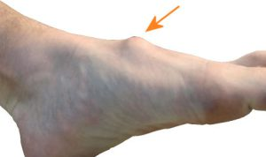
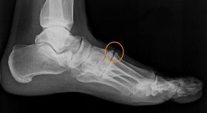
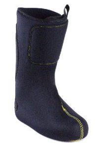

Een bobbel op je voet. Hoe komt die er en wat kan je eraan doen in je skischoen?
Het komt veel voor dat er mensen bij ons komen die een bobbel op hun wreef hebben. Soms ook op beide voeten. Naast dat sommige mensen het 'lelijk' vinden, is het op zich niet een hele ernstige aandoening. Over de oorzaken straks meer maar feit is dat het met skiën nou net lastig is. De standaard skischoen is nu eenmaal niet gemaakt is om zo'n knobbel te herbergen. Omdat de bobbel precies onder de tweede 'schnall' valt, krijgen veel mensen pijn. En dat is niet nodig want een goede bootfitter kan daar zeker iets aan doen.
Deze verdikking heet een 'tarsal boss' of 'tarsale exostose'.
Wat is een 'tarsal boss' en hoe ontstaat het?
Een tarsal boss is een harde onderhuidse zwelling boven op de voetrug en kan veroorzaakt worden door bijvoorbeeld een uitstekend stukje bot of kraakbeen. Maar ook door een ganglion of cyste. Hoewel dat laatste minder vaak voorkomt en dan meestal maar aan één voet.

In verreweg de meeste gevallen wordt de bult veroorzaakt door bot dat uitsteekt. Dit kan zowel een vergroeiing zijn bij een bepaald voettype als het gevolg van slijtage of artrose.Als gevolg van deze slijtage ontstaan er dan uitstekende stukjes bot. Deze worden ook wel osteofyten genoemd.
De slijtage kan ontstaan door aanleg en leeftijd, maar ook door beschadiging van het kraakbeen in de middenvoet, bijvoorbeeld door een letsel (trauma). Als er bijvoorbeeld ooit een voorwerp op uw voet is gevallen. Het lichaam probeert het kraakbeen te herstellen, en vormt daarbij botsporen (de genoemde osteofyten).
Bij een hol- of platvoet kan zich ook een bult op de wreef ontwikkelen. Door de vorm van de platvoet kan bij veel belasting het gewricht vervormen en een bult op de wreef veroorzaken. Bij een holvoet is de wreef altijd al extra hoog en door de vorm kan zich een bult ontwikkelen.
Is de 'tarsal boss' een ernstige aandoening?

Als de verdikking altijd even groot blijft dan is er waarschijnlijk sprake van een botje of stukje kraakbeen dat uitsteekt.Daartegenover, als de bult op de wreef varieert, dus de ene keer groter is dan de ander dan betekent dit dat de verdikking bestaat uit vloeistof, vaak een gewrichtscyste of een slijmbeursontsteking. Dan wordt meestal de bult groter na inspanning of het dragen van nauwe skischoenen. Wanneer de bobbel op de voet varieert in grootte dan raden we aan eerst de huisarts te raadplegen. Een tarsal boss is geen ernstige aandoening maar wel lastig, zeker in het skiën.
Wat kan een bootfitter met een tarsal boss?
Als de verdikking constant even groot blijft dan is er dus sprake van een bot (gewricht) dat uitsteekt. Meestal is dit al jaren het geval, hoewel de bobbel met de jaren wel kan groeien omdat de osteofyten ook groter worden. De bult zit midden op de wreef en dat is nou net de plek waar de tweede schnall zit. Naast het feit dat de skischoen drukt op de bult kan ook de huid stuk gaan. Een voet zit natuurlijk gefixeerd in een skischoen maar er bestaat altijd, hoe klein ook, de ruimte om de voet te bewegen. De combinatie van druk (ruimtegebrek) en wrijving kan leiden tot een pijnlijke plek.
Drie oplossingen voor een tarsal boss in een skischoen:
– Ruimte maken in de bestaande binnenschoen
Afhankelijk van de grootte van de verdikking, is het mogelijk in de binnenschoen ruimte te maken en de bult drukvrij te leggen. Vaak wordt dan ook het harde plastic van de tong verwijderd zodat er geen scherpe randen zijn die de knobbel extra kunnen bezeren.
– De buitenschoen aanpassen
Als het aanpassen van de binnenschoen alleen geen oplossing biedt (omdat de bult te groot is bijvoorbeeld) dan is het ook noodzakelijk de buitenschoen of schaal aan te passen. In verreweg de meeste gevallen wordt dit in combinatie gedaan met de bovengenoemde aanpassing van de binnenschoen.
– Een nieuwe binnenschoen type 'wrapliner' toepassen

In die gevallen waar de verdikking dusdanig groot is (of reeds ontstoken) en elke wrijving veel pijn doet, is het een goede optie de bestaande binnenschoen te vervangen. Wij werken hiervoor met een zogenaamde thermoplastische 'wrapliner'. Een wrapliner heeft geen tong zoals een traditionele binnenschoen maar de schacht van de liner is als het ware om het onderbeen heen geslagen. Het voordeel is dat er geen hardplastic in een tong zit maar een nog groter voordeel is dat bij de wrapliner de druk beter verdeeld is over de voet.Tarsal boss in het dagelijks leven:
Als er klachten zijn in het schoeisel voor het dagelijkse leven dan is er een aantal opties om de tarsal boss te behandelen:
Niet-operatief
Niet-operatieve behandelingen voor de bult op de wreef zijn erop gericht om er voor te zorgen dat, net als in het skiën, de schoen niet op de verdikking drukt. Dit kan op verschillende manieren, namelijk:
- Rust
- Schoenaanpassing
- Vilt (drukvrij leggen)
- Vetertechniek, door bepaalde manier van veteren kan de druk worden weggenomen
- Steunzolen met bijvoorbeeld een verstijving
Operatief
Soms kan het nodig zijn om de verdikking operatief te verwijderen. Bijvoorbeeld bij een steeds terugkerende ontsteking. In ernstige gevallen kan het nodig zijn om het onderliggende versleten gewricht vast te zetten, een zogenaamde artrodese. Er zijn verschillende operatieve behandelingen mogelijk. De orthopedisch chirurg zal de opties met u bespreken.